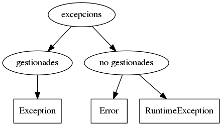

Excepcions predefinides¶
Totes les excepcions a Java hereten de la classe Throwable.
![class Throwable extends Object
class Error extends Throwable
class Exception extends Throwable
class RuntimeException extends Exception
class PrinterException extends Exception
class SQLException extends Exception
class IndexOutOfBoundsException extends RuntimeException
class NullPointerException extends RuntimeException
class UnsupportedOperationException extends RuntimeException
class VirtualMachineError extends Error
class OutOfMemoryError extends VirtualMachineError
class UnknownError extends VirtualMachineError
class IndexOutOfBoundsException #lightgrey
class PrinterException #lightgrey
class SQLException #lightgrey
class NullPointerException #lightgrey
class UnsupportedOperationException #lightgrey
class VirtualMachineError #lightgrey
class OutOfMemoryError #lightgrey
class UnknownError #lightgrey
hide circle
hide empty members
skinparam classAttributeIconSize 0
skinparam class {
BackgroundColor White
BorderColor Black
ArrowColor Black
}](_images/plantuml-3b3151c8ab3d179363dfde4d480944436b888d2c.png)
Jerarquia (parcial) de les excepcions en Java¶
La funció de la classe Throwable és indicar que les seves
subclasses poden ser llençades. Ja hem vist signatures de funcions amb
throws, oi?
Podem classificar les excepcions de Java en dos tipus: les que requereixen ser gestionades explícitament (per exemple amb un bloc try/catch) i les que no requereixen d’aquesta gestió explícita.
Les excepcions que no requereixen de gestió explícita són les classes Error i
RuntimeException i les seves subclasses. Aquestes excepcions representen situacions
d’error del sistema de les que normalment no s’espera que el programa es recuperi.
Considera per exemple les subclasses VirtualMachineError i NullPointerException
que indiquen, respectivament, que la màquina virtual de Java s’ha trencat, i que el codi
està fent servir null on hauria d’haver una instància.
La gestió explícita de les excepcions és revisada pel compilador. Aquest no deixarà passar un codi que no gestioni les excepcions adequadament. Hi ha dues maneres de gestionar una excepció:
- Envoltar el codi que pot generar una excepció en un bloc
try {}i capturar l’excepció amb una clàusulacatch (E e)onEha de ser del tipus d’excepció a gestionar o bé una superclasse d’aquesta. - Indicar al mètode que conté el codi que pot generar l’excepció, que pot llençar
(
throws) una excepció del tipus a gestionar o bé una superclasse d’aquesta.
Fem una ullada a la documentació de la classe Exception.
A la secció Direct known subclasses hi trobem les subclasses de Exception que ens ofereix la API.
Per exemple hi trobem la RuntimeException.
Exercici 3. La classe Hora amb IllegalArgumentException¶
Torna a considerar la classe Hora de l’exercici anterior.
En aquest cas, l’excepció que es generarà en cas de problemes serà
IllegalArgumentException. Comprova de quin tipus és aquesta excepció (gestionada o no
gestionada) i adapta el teu codi adequadament.
Aquest exercici disposa d’un conjunt de tests que pots descarregar-te d”aquí.
Exercici 4. ☼ Incondicional¶
Desenvolupa un programa anomenat UsaHora que esperi tres arguments per línia de
comandes (paràmetre del main())
El programa no farà servir cap condicional (if, switch) ni els simularà amb
bucles.
La seva funció main() consistirà exactament en el següent codi:
public static void main(String[] args) {
System.out.println(processaEntrada(args));
}
Considera les següents sortides esperades per a aquest programa:
$ java UsaHora
java.lang.ArrayIndexOutOfBoundsException: 0
$ java UsaHora a
java.lang.NumberFormatException: For input string: "a"
$ java UsaHora 1
java.lang.ArrayIndexOutOfBoundsException: 1
$ java UsaHora 1 b
java.lang.NumberFormatException: For input string: "b"
$ java UsaHora 1 2
java.lang.ArrayIndexOutOfBoundsException: 2
$ java UsaHora 1 2 c
java.lang.NumberFormatException: For input string: "c"
$ java UsaHora 24 2 3
java.lang.IllegalArgumentException: Hora(24, 2, 3) fora de rang
$ java UsaHora 1 60 3
java.lang.IllegalArgumentException: Hora(1, 60, 3) fora de rang
$ java UsaHora 1 2 -3
java.lang.IllegalArgumentException: Hora(1, 2, -3) fora de rang
$ java UsaHora 1 2 3
1:02:04
Aquest exercici disposa d’un conjunt de tests que pots descarregar-te d”aquí.
Ref. 20.1.10.3